Vue (读音 /vjuː/，类似于 view) 是一套用于构建用户界面的渐进式框架。与其它大型框架不同的是，Vue 被设计为可以自底向上逐层应用。Vue 的核心库只关注视图层，不仅易于上手，还便于与第三方库或既有项目整合。另一方面，当与现代化的工具链以及各种支持类库结合使用时，Vue 也完全能够为复杂的单页应用提供驱动。
本篇记录Vue学习过程，用于心得备忘，对外可读性差🙃，学习Vue还是以官方文档为主。
Vue入门
通过一个Vue实现的todoList来入门：
See the Pen todo-list by wuyouzhuguli (@mrbird) on CodePen.
var app = new Vue({})创建了一个实例，通过el: "#app"接管了ID为app的div的所有内容。data属性用于装载数据，包含list和inputValue。v-for指令用于遍历集合，这里用于遍历list数组中的值；v-model指令用于双向数据绑定，即在<input type="text" v-model="inputValue"/>中输入的值会改变Vue实例中inputValue的值，通过JS改变Vue实例inputValue的值也会改变<input type="text" v-model="inputValue"/>中的值。
@click指令用于绑定事件，这里绑定了createTodoList事件，对应Vue实例methods中的createTodoList。
Vue组件
我们可以对一些常用的HTML片段抽取出来组装成一个Vue组件，Vue组件分为全局组件和局部组件。
全局Vue组件
定义一个全局Vue组件改造上面的todoList：
See the Pen todo-list2 by wuyouzhuguli (@mrbird) on CodePen.
这里我们使用Vue.component('TodoItem',{})定义了一个名称为TodoItem全局Vue组件，可以在任何Vue管理的Dom中使用：
TodoItem组件可以使用<todo-item>的方式使用，即大写可以转换为小写，第二个大写字母转小写后必须加上-前缀；v-bind指令用于绑定值，这里通过v-bind:content将content变量的值绑定为item(即list中的每个元素值)，通过v-bind:index将index变量的值绑定为index（即当前循环的下标）。v-bind可以简写为:；props属性用于向子组件传递数据，这里接收了由:bind指令传递了从父组件绑定过来的index和content变量；template定义了模板，即这个Vue组件呈现的样子（通常都是一段HTML加上父组件传递过来的变量值）。
在这个过程中，我们除了学会了怎么定义全局Vue组件外，还学会了怎么从父组件中往子组件传值。
<div id="app">这个Dom结构已经被Vue接管，其内部又包含了<todo-item>Vue组件，所以我们将<div id="app">称之为父组件，<todo-item>称之为子组件。
局部Vue组件
定义一个局部组件来改造上面的todoList：
See the Pen todo-list3 by wuyouzhuguli (@mrbird) on CodePen.
这里我们定义了一个局部JS对象TodoItem，然后在Vue实例app中的components属性中引入了该对象，名称依旧是TodoItem，这种就是局部Vue组件。
这里主要记录下该局部组件中handleItemClick方法的实现过程：
我们在子组件
TodoItem中定义了一个handleItemClick方法；handleItemClick方法里通过this.$emit('delete', this.index)向父组件传递一个事件，事件名称为delete,事件包含一个index参数。子组件的
@delete监听事件对应2中传递过来的delete事件，监听的方法为父组件的deleteTodoList方法，该方法中接受了2中传递过来的index参数，然后就可以在该方法中实现想要的逻辑了（这里为删除对应的点击对象）。
在这个过程中，我们除了学会了怎么定义局部Vue组件外，还学会了怎么从子组件中往父组件传值。
emit: 英[iˈmɪt],美[ɪˈmɪt] vt.发出; 发射
Vue实例生命周期
Vue实例从创建到销毁包含了多个生命周期，如下图所示：

这个过程中包含了好几个生命周期函数，在相应的时间点会自动执行：
1 |
|
其实，除了上面8个生命周期函数外，Vue还包含3个特殊的生命周期函数：activated，deactivated 和 errorCaptured。
计算属性，方法和监听器
计算属性
一个计算属性的例子：
See the Pen 计算属性 by wuyouzhuguli (@mrbird) on CodePen.
使用computed计算了fullName属性，值为firstName+lastName。计算属性具有缓存功能，当firstName和lastName都不改变的时候，fullName不会重新计算，比如我们改变age的值，fullName的值是不需要重新计算的：
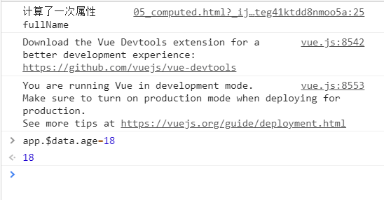
方法
使用方法也可以实现上面的功能：
See the Pen todo-list5 by wuyouzhuguli (@mrbird) on CodePen.
不过methods并没有缓存特性，比如我们改变age的值，fullName()方法会被执行一遍：
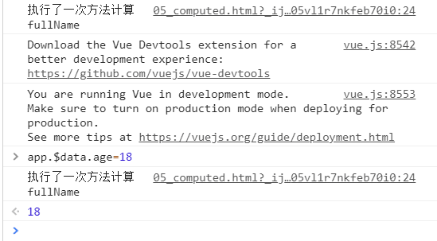
监听器
使用监听器也可以实现上面的功能：
See the Pen todo-list6 by wuyouzhuguli (@mrbird) on CodePen.
这里监听了firstName和lastName的值，当它们任何一个改变的时侯fullName也跟变，我们改变age的值，fullName的值不会被重新计算，也具有缓存特性（不过代码比computed啰嗦）:
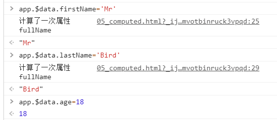
当一个功能可以用上面三个方法来实现的时候，明显使用computed更合适，代码简单也有缓存特性。
computed的getter和setter
将上面计算属性的例子改为下面的形式：
See the Pen get set by wuyouzhuguli (@mrbird) on CodePen.
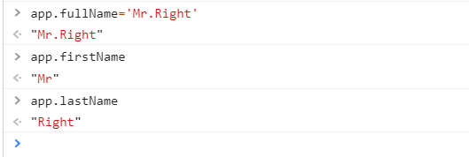
通过这种方式，我们可以在改变计算属性值的同时也改变和计算属性相关联的属性值。
深入理解Vue组件
is
先来看一个bug，下面是一个简单的Vue组件使用：
1 |
|
虽然其在页面上看上去是正常的，但是查看器DOM结构就能发现问题：
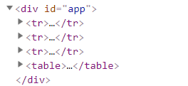
可看到table的结构是错误的，因为HTML5规范只允许<tbody>下面紧跟着<tr>标签，类似的<ul>下只能紧跟着<li>标签。为了解决这个问题，我们可以用is来改写代码：
See the Pen is by wuyouzhuguli (@mrbird) on CodePen.
子组件中的data应该为function
改一下上面的例子：
1 |
|
如果data只是一个JS对象的话，Vue将抛出异常，之所以有这样的限制是因为子组件可能会在不同的地方多次引用，为了保持数据的作用域不一样（相互独立，互不影响），所以使用函数包裹了下。
ref
在使用Vue的时候，总有不得不去操作DOM的时候，这时候可以使用ref来完成。
在DOM中使用
直接举个例子，使用ref来获取div标签中的内容：
See the Pen ref1 by wuyouzhuguli (@mrbird) on CodePen.
使用ref让div变成一个引用，名称为div，然后在hello()方法中，this.$refs表示当前Vue实例中的所有引用，this.$refs.div这里获取的是<div ref="div">这个DOM对象。
在Vue组件中使用
用Vue编写个求和的例子：
See the Pen ref2 by wuyouzhuguli (@mrbird) on CodePen.
这里ref的引用是一个Vue组件。可以自个console打印看看。
父组件向子组件传值
Vue规定，子组件不能直接修改父组件中传递过来的值。因为如果传递的是一个对象的话，你在一个子组件中修改了对象的属性值，很有可能别的子组件也用到了这个属性，那么就会一起修改了。变通的方法是，子组件去复制一份父组件传递过来的数据，然后修改这份拷贝。
组件参数校验
父组件往子组件传递参数的时候，子组件可以对这些参数的值进行一些规则校验，校验不通过Vue会抛出警告：
1 | Vue.component('my-component', { |
给组件绑定原生事件
如果我们在组件上绑定一个监听事件，其并不会直接调用父组件的方法，如下所示，下面的点击事件是不会被触发的：
See the Pen .native by wuyouzhuguli (@mrbird) on CodePen.
因为这样写实际上@click是子组件向父组件抛出的一个监听事件，这里子组件并没有通过this.$emit('click')向父组件传递这个事件。如果想要在组件上绑定原生的事件，只需要改为`@click.native`即可：
See the Pen .native2 by wuyouzhuguli (@mrbird) on CodePen.
非父子组件传值
父子组件传值上面已经介绍了，那非父子组件传值（不是直接的父子关系）呢？比如：

第一层如何与第三层之间传值呢？相同层级之间的组件又如何相互传值呢？有两种办法：
vuex（后面再说）
总线机制（bus/发布订阅模式/观察者模式）
看一个总线机制的例子（点击child-one会把child-one的innerHTML值传递给child-two）：
See the Pen bus by wuyouzhuguli (@mrbird) on CodePen.
解释一下上面的实现过程：
通过
Vue.prototype.bus = new Vue()实现了在每个Vue实例中添加了一个bus属性，这个bus属性为一个Vue实例，拥有Vue的所有特性。所以在每个Vue实例中都会有一个bus属性，属性值都指向同一个Vue实例；创建了两个兄弟子组件
child-one和child-two；在子组件
child-one中有一个handleClick事件，事件里通过this.bus.$emit抛出了一个change事件，并携带一个参数，值为child-one的innerHTML。之所以可以通过this.bus.$emit抛出，是因为如上面所说的那样，每个Vue实例都携带了一个bus属性，该属性指向一个Vue实例；child-one抛出的change事件可以在任何的Vue实例中通过this.bus.$on来监听到。所以我们可以在child-two里通过调用this.bus.$on来监听，但在哪里监听这个事件好呢？我们可以借助Vue的生命周期钩子函数mounted来监听change事件；
上面主要有两个技巧：① 让所有Vue实例拥有同一个属性；② 这个属性也是一个Vue实例。其实就是强行让非父子组件扯上关系，搭建这个关系的桥梁就是上面定义的bus。
如果只是简单的非父子组件之间的值的传递的话，全局Vue属性bus也可以指向一个简单对象，如下所示：
See the Pen bus1 by wuyouzhuguli (@mrbird) on CodePen.
效果就是，直接点击child-two弹出init；先点击child-one改变this.bus.name的值为one，再点击child-two将弹出one。
插槽slot
插槽要实现的是父组件优雅的往子组件传递DOM结构。https://cn.vuejs.org/v2/guide/components-slots.html。
作用域插槽
有的时候你希望提供的组件带有一个可从子组件获取数据的可复用的插槽，即从子组件获取的数据在父组件中可以以任何形式展现，这种插槽就是作用域插槽，看个例子：
See the Pen slot1 by wuyouzhuguli (@mrbird) on CodePen.
子组件里在插槽中使用:item=item绑定了list中的每一项数据，然后父组件中使用该插槽的时候用slot-scope="props"接收了这些数据。
动态组件
看个例子：
See the Pen dynamic by wuyouzhuguli (@mrbird) on CodePen.
<component>标签用于加载动态组件，加载哪个名字的组件根据:is指定的值来选择。这里通过change事件来改变type的值。
Vue动画特效
Vue官方文档写的很详细，https://cn.vuejs.org/v2/guide/transitions.html。
构建第一个Vue项目
第一步，安装vue-cli：
1 | cnpm install --global vue-cli |
安装好后，初始化一个简单的Vue项目：
1 | vue init webpack vue-project-test |
过程中需要步骤确认：
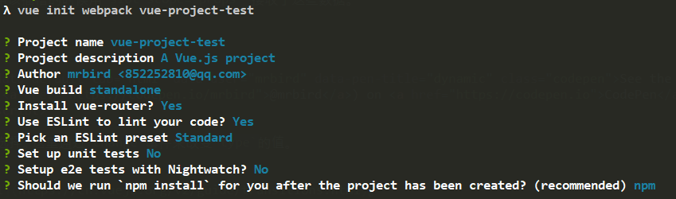
初始化完毕后，启动项目：
1 | cd vue-project-test |
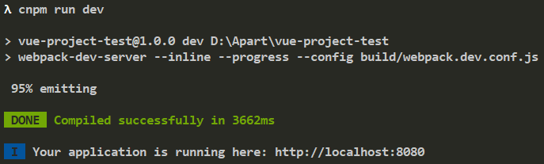
项目构建成功！前端也挺好玩的😋
项目结构介绍
打开上面创建好的vue-project-test，项目目录如下所示：
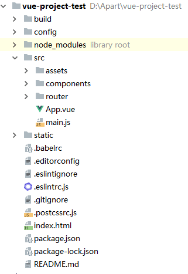
先从外部的文件说起：
package.json：第三方依赖配置；
package-lock.json：package.json的锁文件，确定第三方依赖的版本，保持团队协作上版本的统一；
index.html：项目首页模板；
.postcssrc.js：postcss配置项（暂时不懂干嘛的）；
.eslintrc.js：js语法检查；
.eslintignore：配置排除js检查；
.editorconfig：编辑配置；
.babelrc：将Vue文件转换为浏览器能够识别的html；
再来看目录：
static/：项目静态资源存放，里面的资源直接可以通过URL访问；
node_modules/：项目依赖的第三方包；
src/：包含项目文件，结构如下所示：
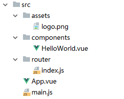
main.js：整个项目入口文件；
App.vue：项目的根组件；
router/：项目路由配置处；
components/：存放项目所用到的组件；
assets/：存放项目用到的图片资源；
config/：项目配置文件目录，修改需要重启项目；
build/：项目打包webpack配置处。
单文件Vue组件
当一个文件以.vue结尾的时候，他就是一个单文件Vue组件，比如上面的App.vue:
1 | <template> |
可以看到，单文件Vue组件主要包含了三个部分：templage、script和style。
Vue路由
路由就是根据不同的URL返回不同的内容给用户。
可以看到上面单文件Vue组件里有个<router-view/>标签，它显示的是当前路由地址对应的内容，当前地址就是http://localhost:8080/#/，它对应的内容是下面红框部分：
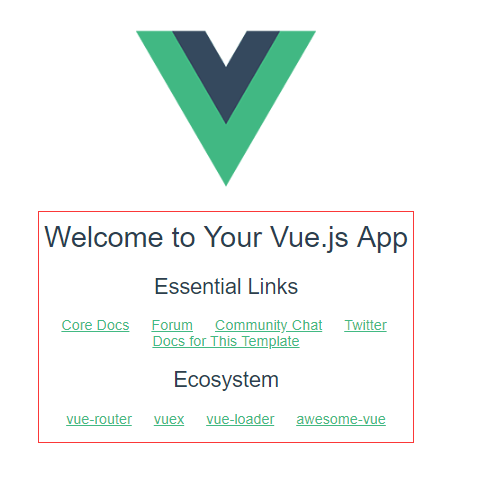
那它为什么就会显示出这个部分的内容呢？下面讲解下：
在main.js中：
1 | // The Vue build version to load with the `import` command |
这里我们引入了router，并在Vue实例中使用了。
ES6语法，当键值对名称相同时，可以简化，比如上面router指的是router: router；components: { App }指的是components: { App: App }
import router from './router'会帮我们引入当前目录下router文件夹下的内容，router目录下是一个index.js：
1 | import Vue from 'vue' |
上面配置了一个路由规则，当访问项目根路径的时候，引入名称为Helloworld的Vue组件，这个组件来自'@/components/HelloWorld'，其中@表示src这个目录。
HelloWorld.vue文件内容：
1 | <template> |
所以首页红框内会显示这个内容。
函数节流
比如我们的在输入的时候需要监控keypress事件，在页面滚动的时候监控页面的滚动事件，这时候事件执行的频率会非常之高，这时候我们可以用下面这个方法来节流：
1 | data () { |
上面Vue监听了keyword变化，我们在监听函数里使用定时器的方式来节流，让频繁调用的时间延迟100毫秒，这个时间范围内只会执行一次监控事件。实际应用时，这个时间范围带来的节流影响肉眼上看不出区别即可。
Vuex实现数据共享
上面介绍了使用bus来进行非父子组件之间的传值，现在我们看看怎么通过Vuex来实现（官方推荐，更为强大方便）。来看下图:
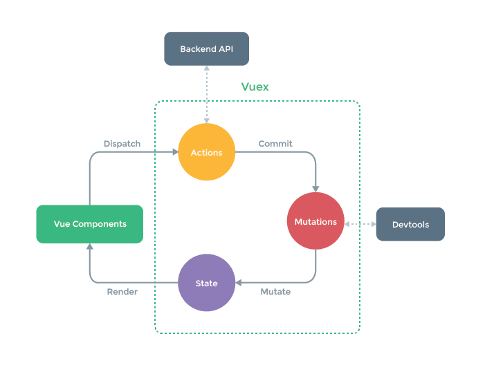
当多个组件之间需要传递复杂的值的时候，我们就可以借助Vuex来实现。Vuex相当于是一个存储公共数据部分的地方（类似于仓库Store），当一个值被改变的时候，别的用到这个值的地方也会感应到改变。上图绿色虚线部分就是Vuex区域。
公共数据存储在State部分，组件（Vue compontents）可以直接通过Render方法引用。组件不能直接改变这个数据，需要通过调用Dispatch方法来改变Actions，由它来通过调用Commit方法来改变Mutations，最后由Mutations调用Mutate方法来改变公共数据。这个过程就对应上图的循环圈。
这个过程也不是绝对的，有的时候组件也可以直接通过调用Commit方法来改变Mutations，再由Mutations调用Mutate方法来改变公共数据。
Vuex安装：
1 | npm install vuex |
Vuex使用
src下新建一个store目录，然后在下面创建index.js：
1 | import Vue from 'vue' |
这里我们创建了一个Store，并定义了state，里面包含一个name属性，值为mrbird。
1 | ... |
我们在main.js里引入了Store，即根组件里引入了，所以任何子组件都可以使用了。
像下面这样使用：
1 | this.$store.state.name |
这样就可以取出mrbird。
在需要改变值的地方派发一个改变事件：
1 | this.$store.dispatch('changeName', 'newName') |
然后在/store/index.js下添加actions：
1 | import Vue from 'vue' |
可看到，actions里定义的changeName方法对应this.$store.dispatch('changeName', name)派发的方法，通过第一个入参ctx执行ctx.commit('changeName', name)，这里的changeName对应mutations里的changeName方法，最终我们可以在这个方法里改变state里的name的值。
上面这个过程对应图里流程，这个过程也可以简化👇
在需要改变值的地方执行下面语句：
1 | this.$store.commit('changeName', 'newName') |
然后/store/index.js下直接这样写即可：
1 | import Vue from 'vue' |
Vuex高级特性
从Vuex里取出state里的值的时候，上面是这样写的：
1 | this.$store.state.name |
这里可以简化一波：
1 | import { mapState } from 'vuex' |
然后取值的地方直接this.name就行了。
也可以这样：
1 | import { mapState } from 'vuex' |
然后取值的地方直接this.currentUser就行了。
取值的地方可以简化，那么改变值的地方也可以简化（import的时候也引入mapMutations）：
1 | import { mapMutations } from 'vuex' |
然后在methods里这样：
1 | methods: { |
实际项目中，actions和mutations里的内容一般都非常多，所以我们可以将它们剥离出来，然后引入即可，就像下面这样：
新建mutations.js：
1 | export default { |
然后在store/index.js里引入：
1 | import Vue from 'vue' |
Vuex Getter
Getter类似于Vuex版的computed，在store/index.js里定义Getter：
1 | import Vue from 'vue' |
引用的地方：
1 | import { mapGetters } from 'vuex' |
然后this.getMessage就会得到mrbird is so handsome信息了。
Getter详细文档： https://vuex.vuejs.org/zh/guide/getters.html
Vuex Module
由于使用单一状态树，应用的所有状态会集中到一个比较大的对象。当应用变得非常复杂时，store 对象就有可能变得相当臃肿。
为了解决以上问题，Vuex 允许我们将 store 分割成模块（module）。每个模块拥有自己的 state、mutation、action、getter、甚至是嵌套子模块——从上至下进行同样方式的分割：
1 | const moduleA = { |
详细文档： https://vuex.vuejs.org/zh/guide/modules.html
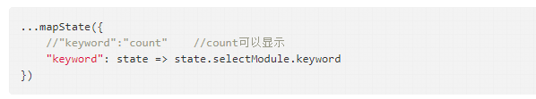
路由跳转
我们除了可以使用<router-link>创建 a 标签来定义导航链接，我们还可以借助 router 的实例方法，通过编写代码来实现：
1 | router.push('/home') |
具体：https://router.vuejs.org/zh/guide/essentials/navigation.html
路由参数传递
当路由path中包含参数的时候，比如：
1 | export default new Router({ |
在Detail组件中，我们就可以使用this.$route.params.id来获取了。
localStorage
H5中新增的可以存储数据的东东，类似cookie，但比cookie更简单。
改进一下上面Vuex的例子：
1 | export default new Vuex.Store({ |
在mutations中，我们不但改变了state.name的值，还把值存到了localStorage中，这样即使浏览器刷新也不会重置回’mrbird’。
和cookie类似，localStorage也可以通过浏览器禁用，所以我们在使用localStorage的时候要用try{}catch(){}来处理，防止代码抛出异常无法正常运行。
keep-alive
https://cn.vuejs.org/v2/api/#keep-alive
组件的递归
当一个数据具有上下级，而且级数无法确定的时候，我们可以使用递归组件来展示我们的层级数据，看下面这个栗子：
1 | <template> |
这个组件叫DetailList，在循环中，通过item.children来判断是否有下级，有的话调用组件自身。这样就可以很简单的实现递归了。
Vue项目打包上线
修改config/index.js：
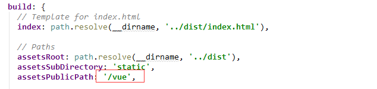
红框部分我们将assetsPublicPath指定为/vue。
接着在项目根目录执行：
1 | npm run build |
打包完，命令行会提示：
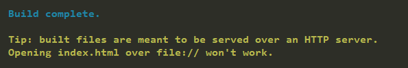
然后项目里会出现一个dist目录：
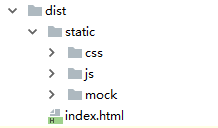
我们在tomcat的webapps目录下也新建一个vue目录，然后把dist里的内容拷贝进去，然后启动tomcat，访问http://{ip}:{port}/vue就能看到项目了。
异步组件加载
查看打包目录下的js文件夹：
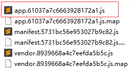
项目所有的逻辑都被打包在了appXXXX.js里了，即在加载首页的时候，整个项目js逻辑都被加载了。如果项目规模很大，这个文件将可能达到MB级别。我们也可以将组件进行异步的加载来解决这个问题，比如在路由中，我们这样引用组件：
1 | import Vue from 'vue' |
component里我们使用箭头函数来引入对应的组件，这样就实现了异步加载，重新打包项目，再次查看js文件夹：
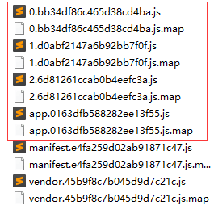
可以看到appxxxx.js已经被拆分了。
自定义Vue插件
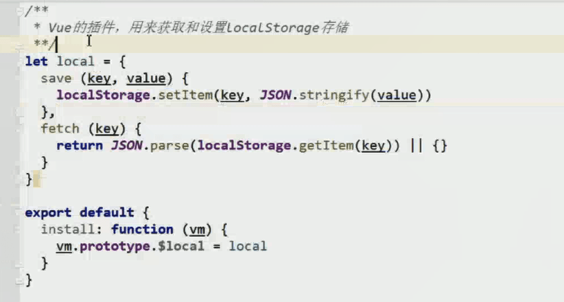
具体可查看：https://router.vuejs.org/zh/guide/advanced/lazy-loading.html